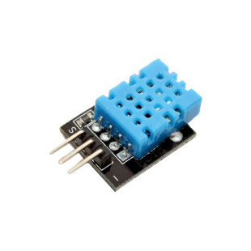
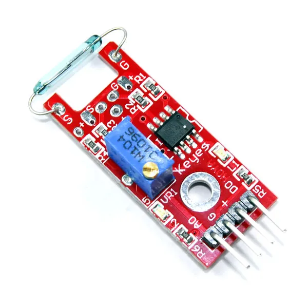
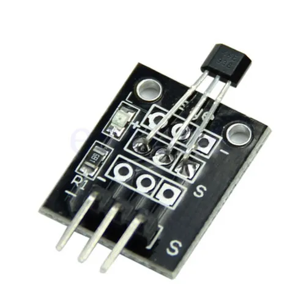
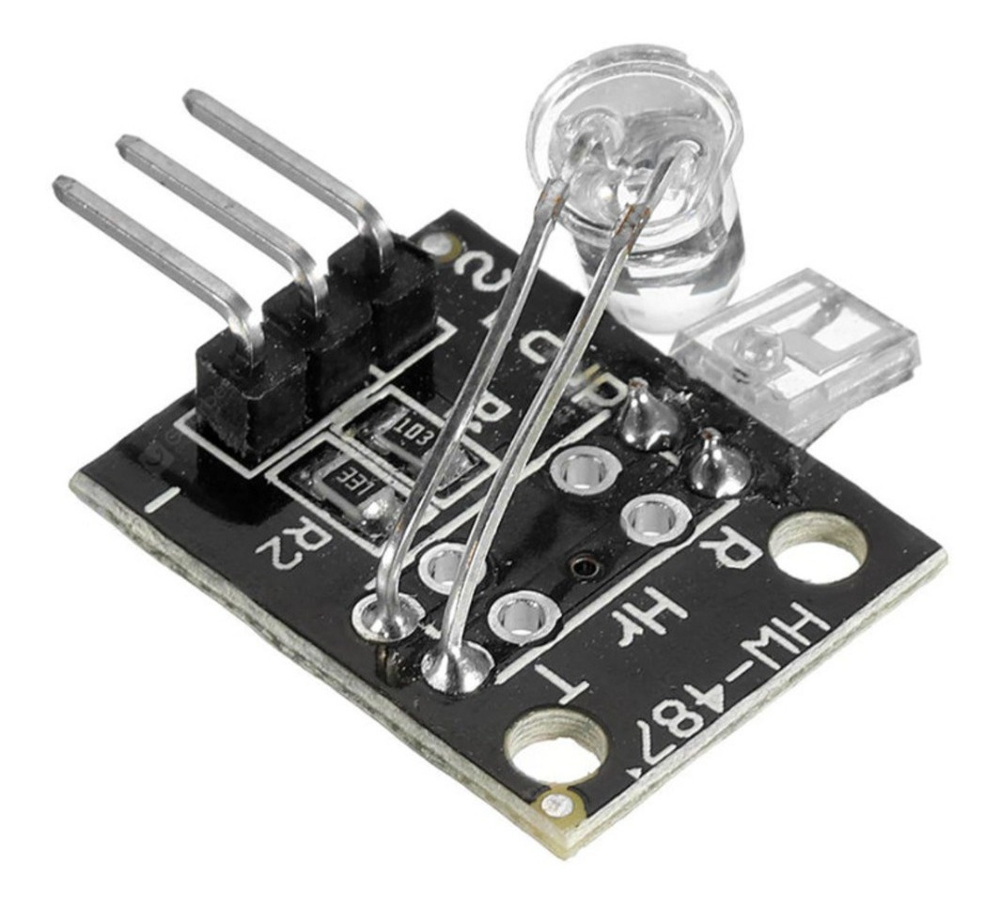

Sensores
Los sensores son dispositivos diseñados para detectar y medir cambios en su entorno físico o químico y convertirlos en señales eléctricas o datos legibles por una máquina. Actúan como los sentidos de un sistema, proporcionando información sobre variables como temperatura, presión, luz, movimiento, sonido, humedad, entre otros.

Pir
se activa cuando detecta movimiento

Infrarrojo
Se activa cuando se interrumpe la señal

Ultrasonico
puede trabajar con distancias

Sonido
detecta sonidos a ciertas frecuencias

Temperatura
puede imprimir los valores de la temperatura actual

Touch
se activa al detectar tacto

Red switch
se activa al detectar magnetismo

Hall magnetic
se desactiva con el magnetismo

Rotary encoder
Manda señales de acuerdo a donde lo gires

Heartbeat sensor
capacidad de identificar frecuencia cardiaca

Avoid
detecta los obstaculos
Propósito
la informacion que uno encuentra en iternet sobre circuitos y comandos de raspberry pi son algo escasos, entonces me encarge de buscar, documentar y comprobar lo mas posible, desde comprobar el codigo, el circuito hasta instalar las librerias. Con este proyecto busco ayudar a otras personas para que en su busqueda, tengan alguna de esta informacion a su alcance, y esperando que pueda serles de ayuda
actuadores
Los actuadores son dispositivos o componentes que reciben una señal de control y generan una acción física en respuesta a esa señal. Su función es transformar la energía en movimiento mecánico, produciendo cambios en su entorno o sistema

SMD rGB
led 3 colores

Buzzer
puede reproducir tonos

Step motor
motor de paso

Servomotor
motor pequeño programable
Pantalla OLED
con la capacidad de imprimir casi cualquier cosa

Matriz led
para poder crean secuencias de iluminado
Motor ln298n
motor con mayor potencia

Display
capaz de imprimir varios valores
Conclusión
Aunque no logre hacer funcionar uno que otro circuito, considero que es buen numero lo que pude lograr, todo codigo me funciono de alguna manera junto a su circuito, pero no puedo asegurar totalmente que sea la mejor opcion, igual me lleve varias cosas de aprendizaje.
Realizado por Christopher Eduardo Barrientos Guerra